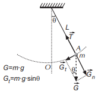
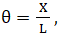
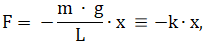
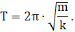
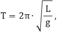

Pendulul gravitațional
Pendulul gravitațional este format dintr-un punct material de masă m suspendat de un fir inextensibil de masă neglijabilă și de lungime L. Dacă pendulul este deplasat din poziția sa verticală de echilibru și este lăsat liber, el oscilează în plan vertical sub acțiunea forței de greutate. Traiectoria descrisă de punctul material este un arc de cerc.
 În imagine
s-au reprezentat și forțele care acționează asupra
punctului material. Forța de revenire, care tinde să
readucă pendulul în poziția de echilibru este F = Gt = m × g × sinθ.
Forța de revenire nu este proporțională cu θ, ci cu sinθ și, de aceea, mișcarea pendulului gravitațional nu este
o mișcare armonică. Pentru unghiuri mici, dacă θ este exprimat în radiani, se poate arăta că
sinθ = θ.
Pentru unghiuri
mai mici de 6° diferența între θ și sinθ este suficient de mică pentru a fi neglijată. Folosind aproximația discutată
expresia forței de revenire devine: F = -m × g × θ, unde s-a folosit și următoarea convenție.
Convenție: Pentru pozițiile pendulului situate la dreapta poziției de echilibru unghiul θ este considerat pozitiv,
iar pentru pozițiile situate la stânga poziției de echilibru unghiul θ este considerat negativ.
Deoarece unghiul θ este exprimat în radiani,
unde X este
lungimea corzii care subîntinde arcul de cerc cuprins între poziția de echilibru,
O, și poziția,
A,
ocupată de punctul material. Atunci expresia forței de revenire ia forma 
ceea ce arată că, pentru oscilații de mică amplitudine (unghiuri θ < 6º) forța de revenire este de tip elastic și
mișcarea pendulului este o mișcare oscilatorie armonică.
Perioada T de oscilație a pendulului este dată de relația
Folosind aici relația k = (m·g)/L, se obține pentru perioada de oscilație a pendulului gravitațional expresia

unde:
– L este lungimea pendulului, [L]SI = m;
– g este accelerația gravitațională, [g]SI = m/s2.